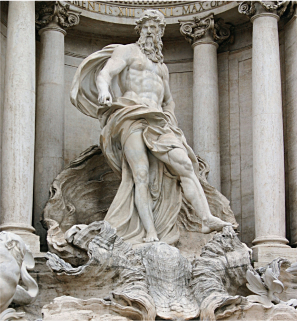
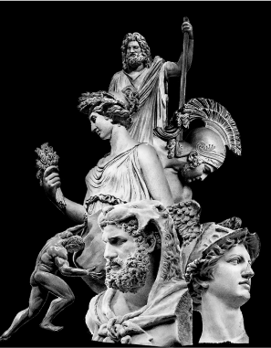
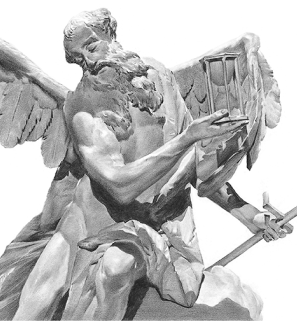
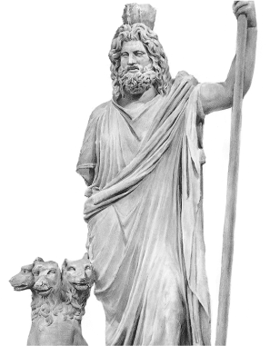
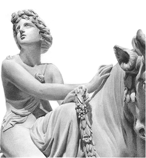
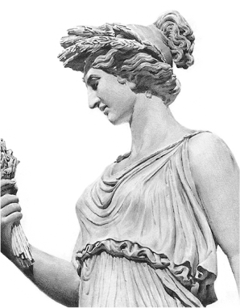

시리즈
-
[김헌의 그리스 로마 신화] 미리보기
#예고. 김헌의 그리스 로마 신화
영웅은 신과 인간 사이에서 태어난 반신반인의 존재로서 신적인 능력과 신의 영역 안으로 들어가려는 강렬한 욕망을 가지고 있지만, 결국 인간이기에 그 한계를 넘어서지 못하고 신과 인간의 경계선에서 추락하는 존재입니다. 이제 여러분을 신화의 세계로 초대합니다.
-
[김헌의 그리스 로마 신화] 미리보기
#1. 신화를 사랑하는 사람이 지혜를 사랑하는 사람인 이유
놀란다는 것은 내 앞에 나타난 사물이나 벌어진 사건이 무엇인지를 모른다는 것을 의미합니다. 신화를 좋아한다는 것은 그 놀라운 이야기에 매료되었다는 뜻이고, 그런 점에서 지혜를 사랑하는 자와 통한다.
-
[김헌의 그리스 로마 신화] 미리보기
#2. 시간을 주관하는 강력한 신, 크로노스
대지의 여신 가이아와 하늘의 신 우라노스는 부부가 되어 열두 명의 티탄 신족을 낳습니다. 그중 막내가 바로 시간의 신 크로노스였습니다.크로노스처럼 자신을 가두는 기존의 틀을 박차고 나와 기성세대에 도전하는 자만이 새로운 역사를 만들어 내는 주인공이 될 수 있는 것이지요.
-
[김헌의 그리스 로마 신화] 미리보기
#3. 하데스, 죽은 자들의 왕이 되다
하데스는 보이지 않는 곳에서 충실하게 자신의 권한과 책임을 다했습니다. 하데스의 면모를 살펴본다면, 그리스·로마 신화의 다른 신들과는 다른 의연함과 순수함, 성실한 모습이 엿보입니다.
-
[김헌의 그리스 로마 신화] 미리보기
#4. 에우로페, 유럽 문명의 어머니
에우로페는 두 단어가 합쳐진 건데, ‘에우뤼스(eurus)’는 ‘크고, 넓다’라는 뜻이고, ‘오페(ōpē)’는 ‘눈, 얼굴’이라는 뜻입니다. ‘눈망울이 큰 여인’, 또는 ‘얼굴이 달덩어리 같은 여인’이라는 의미이죠. 이오의 고손녀가 바로 에우로페였는데, 에우로페도 역시 제우스의 사랑을 받았던 겁니다.
-
[김헌의 그리스 로마 신화] 미리보기
#5. 쇠똥구리를 탄 농부, 평화의 여신을 구하다
그들은 빨리 전쟁이 끝나고 평화가 정착되기만을 바랐지요. 아리스토파네스는 이런 염원을 『평화(Eirēnē)』라는 작품에 담아 희극 무대에 올렸습니다.